Inverno
- Dicembre
- Gennaio
- Febbraio
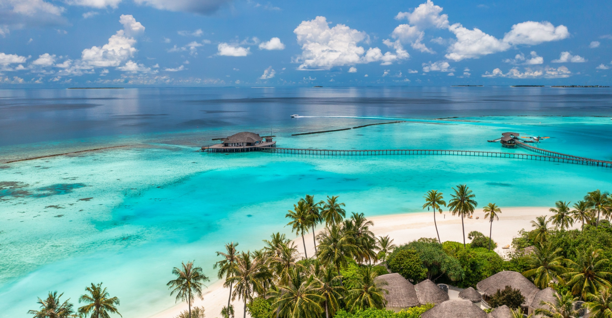
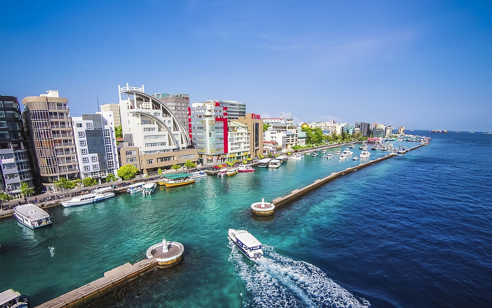
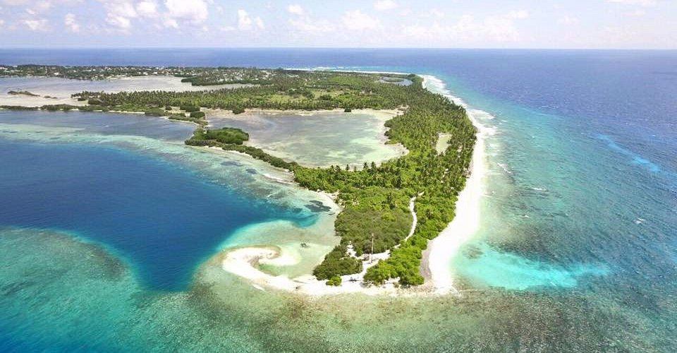

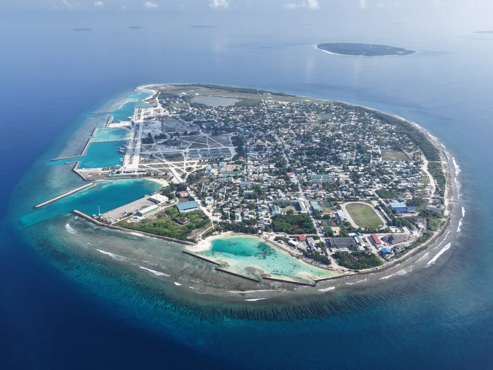
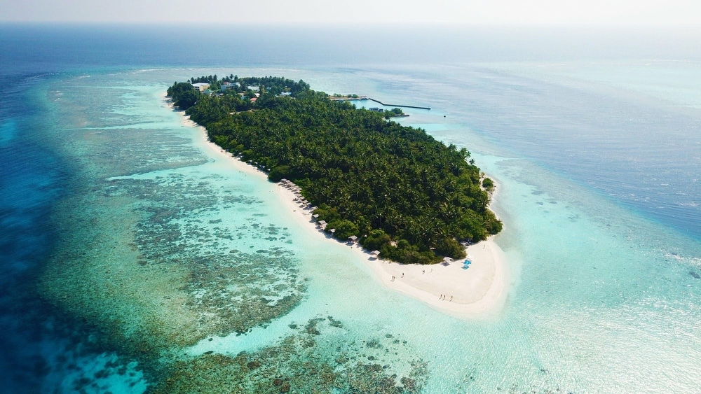
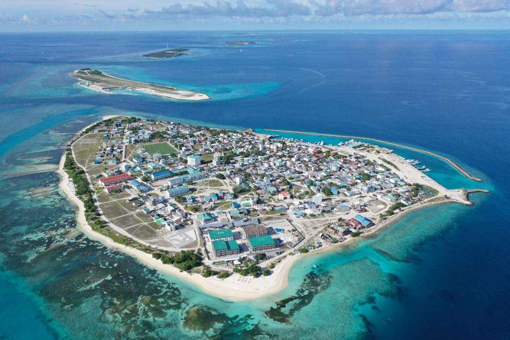
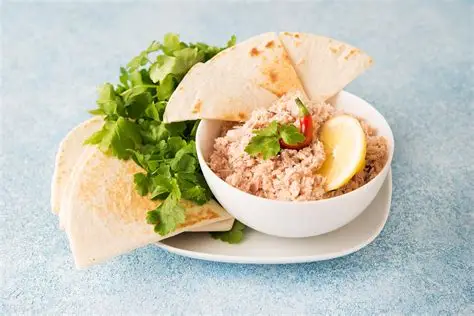
Tonno sminuzzato con cocco, cipolla e peperoncino, tradizionalmente servito a colazione con pane roshi.
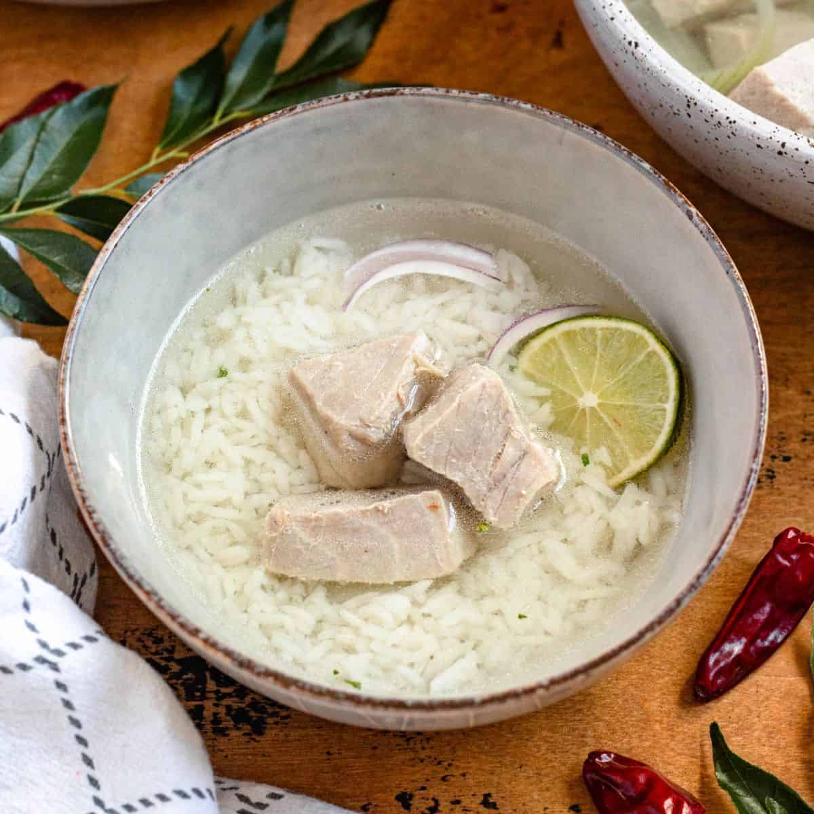
Brodo chiaro di tonno, servito spesso con riso, lime, peperoncino e cipolla.
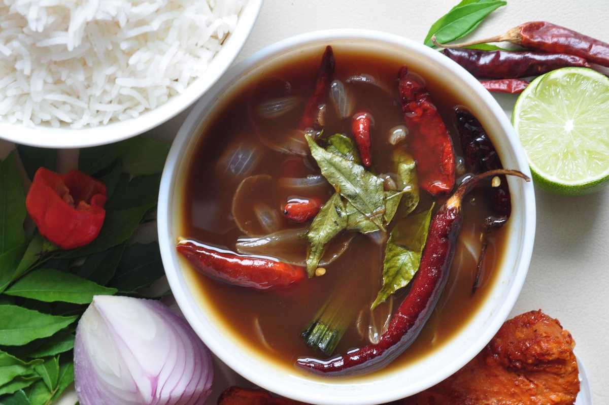
Concentrato denso e saporito ottenuto dalla lunga cottura del tonno, usato come condimento.
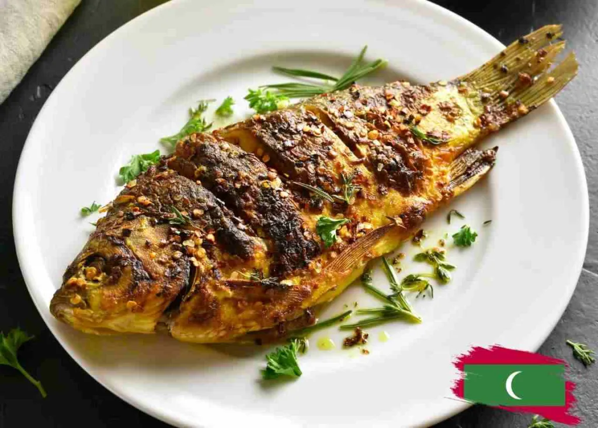
Pesce condito con una miscela speziata e cotto alla griglia, spesso accompagnato da riso o verdure.
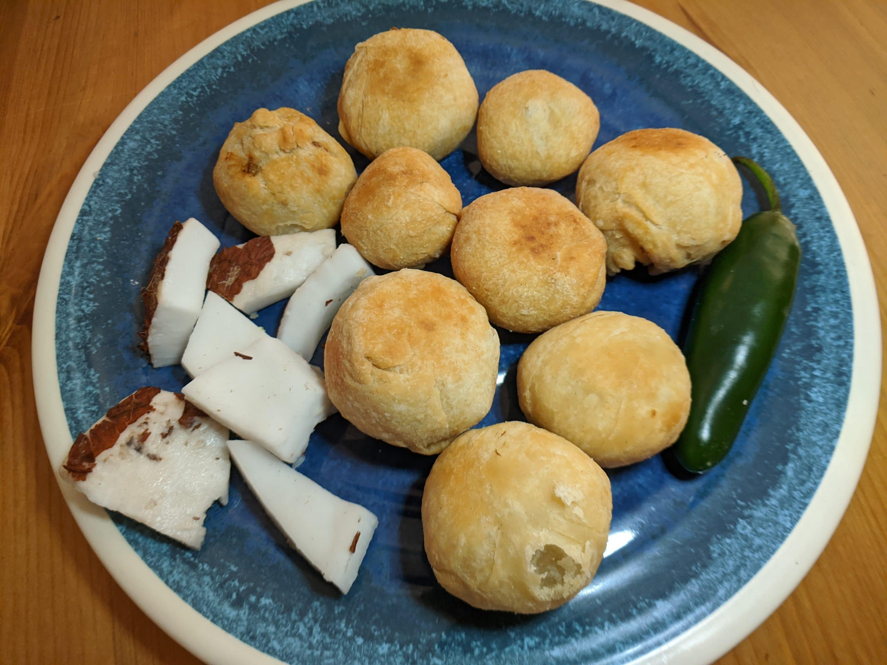
Frittelle tonde di pasta ripiene di tonno, cocco e aromi, servite come spuntino.
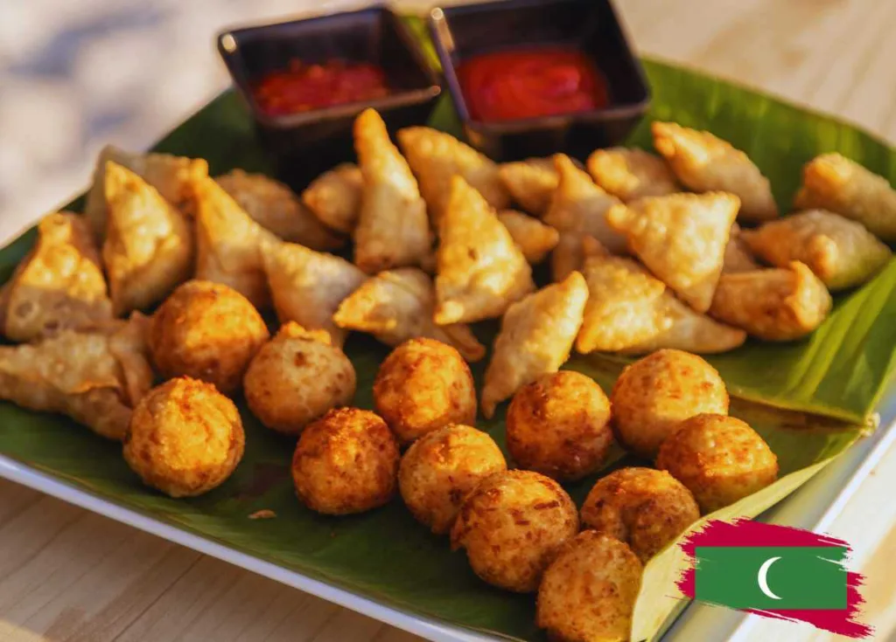
Fagottini fritti ispirati alla samosa, farciti comunemente con pesce e spezie.